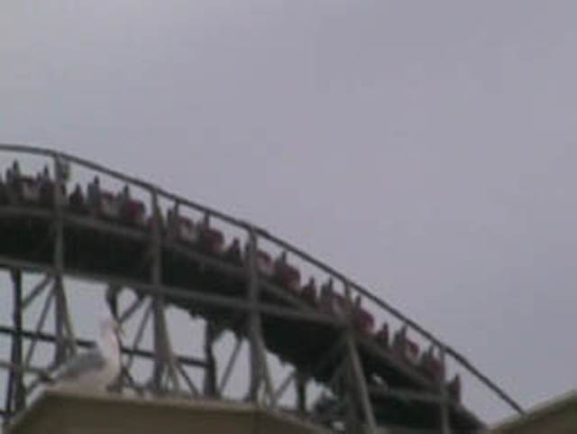

| |

Mean Streak Review

We're here at Cedar Point. For today's ride we'll be going back in time to review Mean Streak. When you first walked up to the ride, you thought, "Damn! That's a really big wooden coaster. It must be really fun." Unfortunetly, this ride had no forces at all whatsoever. Once you get into the trains, you climb up the big lifthill. After climbing the lifthill for a good long time, you assumed you're in for a treat. Then we finally reach the top. At this point, we are really looking foreward to the ride that we're about to go through. But as we went through the first drop, we noticed that something is not right. We then realized that we went through SEVERAL sets of trim brakes. At the bottom of the first drop, we were probably going at the same speed as a kiddy woodie. We then realized that we had to go through that huge banked curve. We thought FOR SURE that we were going to roll back. We made it over the top, but just barely. Then you started to go down another small drop before turning up into a turn. But then we notice our second drop is coming up. And to our joy, there's NO TRIM!!! HOORAY!!!!!! Then we rose up into a sort of curve. You got a nice view of Lake Erie from there. Then we went through a series of curves. During this point of the ride, it is especially easy to fall asleep to to the lack of forces and fun. Then we went through another drop and up into a sort of upward curve into the mid course brakes. At this point, you realized that there is no hope for fun on this ride. Then you went through a curved sort of drop before rising up into a turnaround. Luckily, we had Lake Erie to look at so we don't fall back asleep. Hey, Mean Streak may be gone, but Lake Erie is still here. And the replacement is SO MUCH BETTER!!! After the turnaround continued in the rides structure, we dropped back down and went into a bunny hop with no airtime what so ever. Then we went through this sort of curve in the structure that lasts a while before dipping into some straight track outside the structure. This lead us directly to the brake run. While the ride may have looked big and scary, it was actually more boring than taking a Calculus Class in Latin. However, in one of the best moves ever, Cedar Point RMCed Mean Streak, creating Steel Vengeance. Normally, that's great enough, but when you go from having one of the worst coasters ever, into one of the best coasters on the planet, it's just astonishing. You may have sucked Mean Streak, but by dying off, you gave us one of the best rides ever. So thank you Mean Streak. Thank you for dying.
1/10
Location: Cedar Point
Opened: 1991
Died: September 16, 2016
Built by: Dinn Coorporation
Last Ridden: July 24, 2007
Mean Streak Photos


Home
|